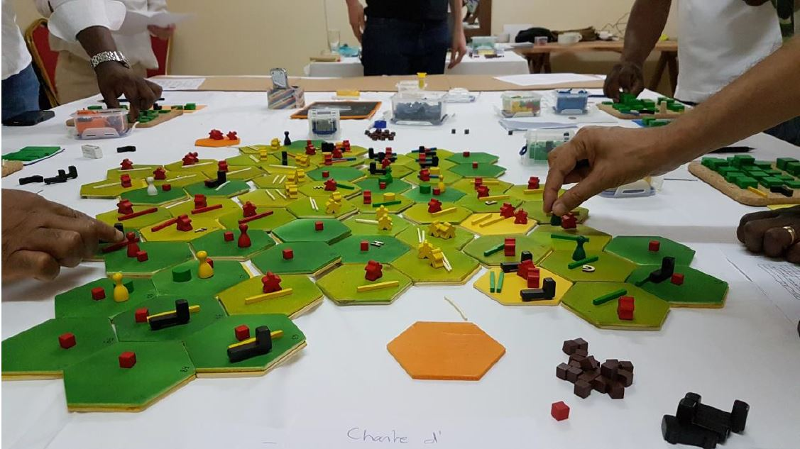
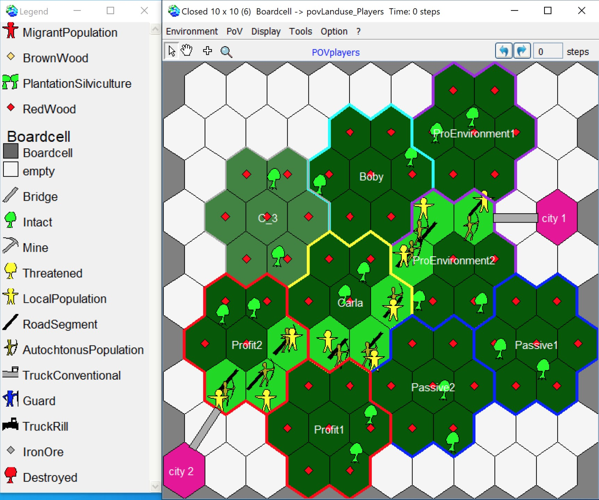
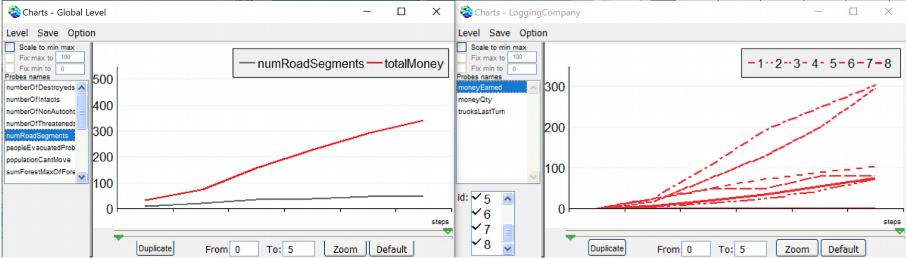

|
MineSetInteractive simulation for sustainable forest management in the Congo BasinBased on the ComMod approach, MineSet is a role-playing game developed in the context of the CoForSet project. It was first created as a board game before being ported to Cormas in its digital version. The board game Description of the gameMineSet is a game where up to 9 players take the role of a forestry or mining company. Players must try to make their company prosper while taking into account the environmental and societal impacts of their activities. To develop their strategy, players can negotiate with each other. For their actions, they own a small set of tokens that they can place on the board:
The other tokens are not placed by the players and have various roles:
The board represents a forest basin. It is divided into cells whose color depends on the state of the forest (from dark green for a very good state, to yellow for fragmented and degraded forests). A set of 9 forest cells constitutes a forest concession in which a player can exploit the resources. Forest concessions are sold in an auction at the beginning of the game. Mining concessions only appear during the game: players choose when they can enter the game. A mining concession can only be placed on a cell where there is an iron deposit, their size varies between 1 and 3 cells. Finally, two city cells are located at the edges of the board. These cells are connected to only one other cell of the forest board. The cities are the departure point for the migrating populations and the arrival point for the trucks to sell and unload their merchandise. The MineSet board under Cormas The game takes place over a total of 5 time steps, each representing 10 years. At the beginning of their turn, players must converse and organize themselves to lay down their tokens or exchange parts of concessions. They can also set up an agreement between them that, in exchange for a certain respect for the environment, gives access to a more lucrative market. Evolution of some indicators (global on the left, individual on the right) A hybrid gameWith
MineSet, it is possible to move away from the interactive
game in order to explore strategies. Thus, a MineSet
simulation can be autonomous, just like a classic
simulation. This option also allows participants to play
MineSet even if there are missing players. In this case,
the missing players are replaced by autonomous agents.
This is a true hybrid simulation in the sense of Le Page
et al (2010). Thus, after specifying the number of
players, MineSet opens an initialization interface where
each player chooses his name, the type of company he wants
to manage and a color :
MineSet initialization interface
To complete the game board, autonomous agents are created. In order to simulate their behaviors, we have defined three types of autonomous agents corresponding to archetypes of players. Three caricatured strategies are thus defined :
Example of a simulation with 9 autonomous agents divided into 3 "Profit", 3 ProEnvironment" and 3 "Passive" strategies For a more detailed description, download Anton Bommel's dissertation (translated in English).
|
|